The realm under siege: the M8 showreel
On the evening of 14 October I played the online mode up to level 10 and asked "now what?". By 08:14 the next morning the agents had built the answer and cut a reel of it: 67 seconds of the Brood, the Citadel's guns, the Dropship, The Fork and the Matriarch, to one of our own songs.
Every beat of the reel has its own post on this blog, so this one is the tour. The times are where each beat starts.
0:00 · Dawn, and a valley without seams
Prospect Landing at dawn under the ringed giant, then out through a passage into the next valley. Region borders follow the land now, 14 passages join the 9 regions, and crossing on foot hands you from one region to the next without a seam. The passages and the valleys.
0:08 · The Citadel
The realm screen, the shop, the missions board and the Journal. The Citadel takes 10% of every unload into a realm wallet, sells four consumables and every blueprint, and offers missions in three tiers, each with a narration. The reel's one spoken line is the Warden's: "When the ring's shadow crosses the land, the ground goes cold and the dark comes alive." The realm and the missions.
0:17 · The Brood
Shardlings at the ore, a Gloamwing diving, a Lodeback hauling ore off in its sac. Four kinds of bug, drawn to the places worth being, and with 17 to 19 of them on screen the mean frame time went from 10.42 ms to 10.77 ms. The Brood and their art pass.
0:24 · The raid
KSTR calls a swarm heading for the Citadel, and its four corner guns answer. Then the gatling gun's red-hot amalgam rounds. The defences and the turret upgrades.
0:28 · The Dropship
Board at a Landing Pad, a banked turn past the giant, down on the pad in a new region, 16 to 20 seconds without a fade. The Dropship.
0:36 · The map
The world map is a satellite view of the real ground of every region you've seen, with tooltips on everything in it. The world map.
0:42 · The Fork
A wave down the canyon's arm, guns on the rim. Ten waves, 34 bugs in the last, and a wave breaks through when it carries off 300 ore of the prize. The Fork and holding it.
0:52 · The Matriarch
She comes out of the tunnel the wave came from, fells every turret in the canyon nearest first, and goes home to her nest in Slag Pockets, which is where the reel ends. The Matriarch.
Stills from the reel
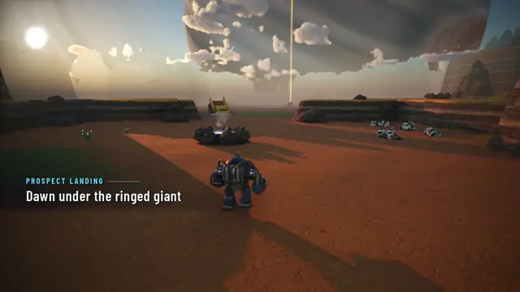
Prospect Landing at dawn.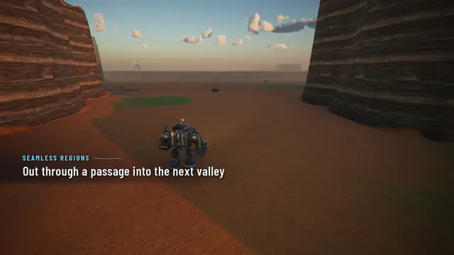
Out through a passage into the next valley.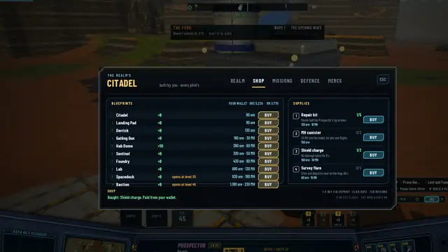
The Citadel's shop: every blueprint, and four consumables.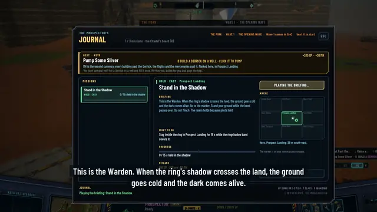
The Journal, with the Warden's briefing playing.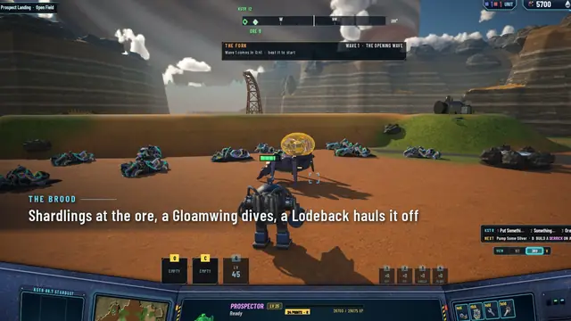
The Brood at the ore.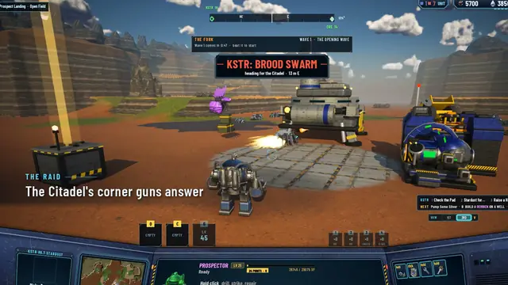
The raid: the Citadel's corner guns answer.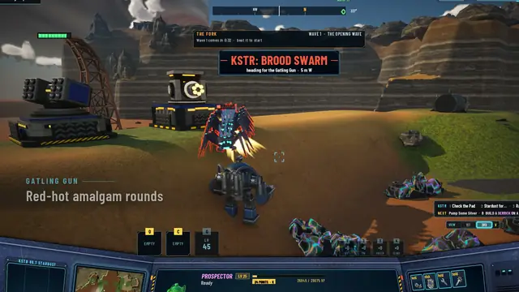
The gatling gun's amalgam rounds.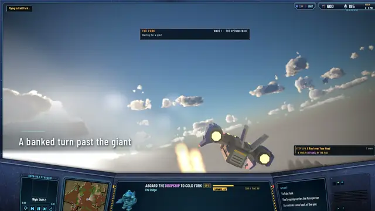
The Dropship: a banked turn past the giant.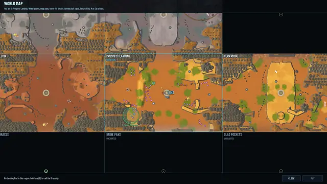
The satellite map.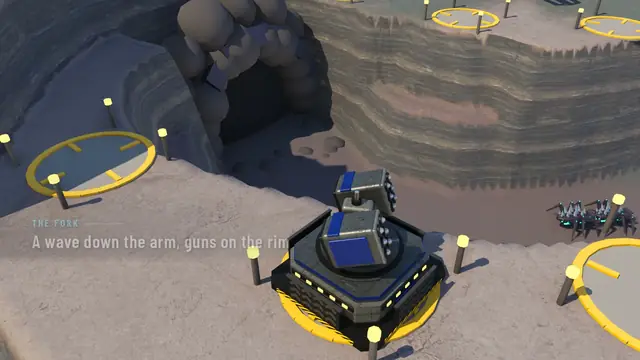
The Fork: a wave down the arm, guns on the rim.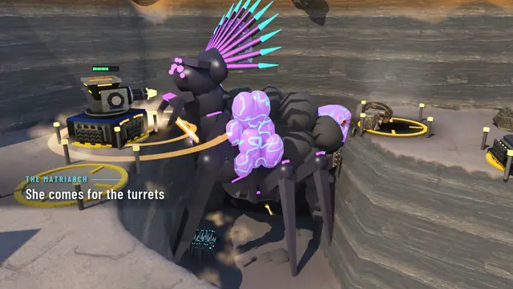
The Matriarch comes for the turrets.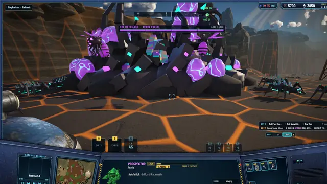
Her nest in Slag Pockets.


How the reel was made
An agent recorded each beat with a shot script that drives the game through hidden runs: the game runs invisible and silent, one run at a time on the whole Mac, and a clip mode drops the HUD for the clean moments. A cut file lists each shot's source, in and out points, zoom, focus, kicker and caption; a script pans, subtitles and joins them with half-second crossfades, and puts the end card over the key art. The music is Rising Pressure, one of our Suno songs, mixed at −16 LUFS. Between the first task of the milestone and the reel, 137 commits landed on the integration branch.
Before the reel, a stability pass fixed the flaky checks at their causes and reran everything on the current build: 27 shot sets, 6 flows, 92 of 92 automation tests, and the suites at 496 core, 267 server and 88 network tests, all passing.
The next milestone is a living frontier. Its first piece landed the morning after the reel: five pilots of the server's own in every world, with callsigns, paints and habits, playing by the same rules as you. That post is next.